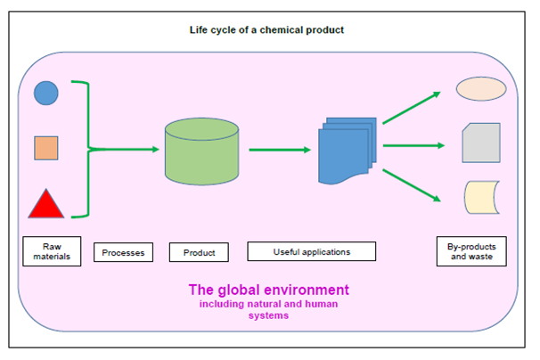

Life cycle of a chemical product
The environment in which chemistry takes place is not just the immediate walls of the test tube or reaction flask – beyond these is the whole world. In this larger setting, the conduct of chemistry impacts on many interconnected systems.
Consider, for example, the life cycle of a chemical product (see figure below):
Chemical reactions, whether they are small-scale laboratory or large-scale manufacturing processes, generate waste materials that need to be managed – including containment, disposal and recycling – in a safe and sustainable manner.
The raw materials used, whether they are natural resources or other manufactured intermediates, must be sourced efficiently, cleanly, safely and sustainably.
• The products of manufacture may find very diverse uses, including household, medical, industrial and agricultural applications in which they come into contact with people, animals and the environment – and they must therefore be tested to ensure their biological and environmental safety.
• After use, the products or their consequent waste must be disposed of or recycled efficiently, cleanly, safely and sustainably.
• At every stage, the ‘chemistry system’ in which the product is manufactured, used and disposed of is interacting with the ‘human system’. Actions involving chemistry don’t just ‘happen’: they occur because of decisions that people take, individually or collectively. These decisions may result from diverse human motivations, including curiosity and aspirations for success, wealth, power or pleasure; and they are influenced by legal constraints, by societal pressures and by movements for the advance of collective local and global goals.
• The ‘chemistry system’ therefore interlinks with a host of other overlapping systems including the biosphere, the environment, human and animal health, economics, politics, psychology and the law.
One World Chemistry embraces the view that the chemical sciences should not be taught or practiced without an in-built consideration of these relationships – i.e. education and practice in chemistry must be informed by systems thinking. This must encourage policies, programmes and practices that are aware of complexity and prepared for unintended consequences.